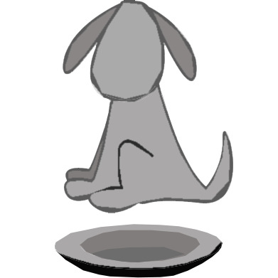

<ion-header>
  <ion-toolbar>
    <ion-title>Home</ion-title>
  </ion-toolbar>
</ion-header>

<ion-content [fullscreen]="true">
  <ion-list>
    <ion-list-header>
      Today's Food Log
    </ion-list-header>

    <ion-item-sliding *ngFor="let food of foods | async">

        <ion-item (click)="openFoodEditModal(food)">
          <ion-avatar slot="start">
            
          </ion-avatar>
          <ion-label>
            <h2>{{ food.food.food_name}}</h2>
            <p>At home</p>
          </ion-label>
          <ion-badge color="light" slot="end">{{ food.time.hour}} : {{food.time.minute}}</ion-badge>
        </ion-item>


      <ion-item-options side="start">
        <ion-item-option color="primary">
          <ion-icon slot="icon-only" ios="share-outline" md="share-sharp"></ion-icon>
        </ion-item-option>
      </ion-item-options>

      <ion-item-options side="end">
        <ion-item-option expandable color="danger" (click)="deletefood(food.id, food.date)">
          <ion-icon slot="icon-only" ios="trash-outline" md="trash-sharp" ></ion-icon>
        </ion-item-option>
      </ion-item-options>
      <script></script>
    </ion-item-sliding>


    </ion-list>

  <div *ngIf="foodNum==0">
    
    <ion-label style="text-align: center;padding-top: 12px;display: block">
      <P>Today's food log is empty</P>
      <p>Feed yourself and the logger!</p>
      {{foods.length}}
    </ion-label>
  </div>

    <ion-fab horizontal="end" vertical="bottom" slot="fixed">
      <ion-fab-button>
        <ion-icon name="add"></ion-icon>
      </ion-fab-button>
      <ion-fab-list side="top">
        <ion-fab-button color="light" [routerLink]="['/','logger','text']">
          <ion-icon name="text-outline"></ion-icon>
        </ion-fab-button>
       <ion-fab-button  color="light" [routerLink]="['/','logger','barcode']">
          <ion-icon name="barcode-outline"></ion-icon>
        </ion-fab-button>
        <ion-fab-button color="light" [routerLink]="['/','logger','voice']">
          <ion-icon name="mic-outline"></ion-icon>
        </ion-fab-button>
        <!-- <ion-fab-button  color="light">
          <ion-icon name="camera-outline"></ion-icon>
        </ion-fab-button> -->
      </ion-fab-list>
    </ion-fab>

</ion-content>
